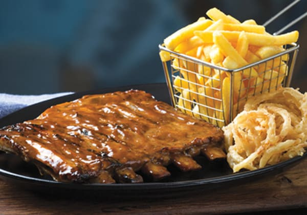

SPUR
Founded: Spur was established in 1967 in Cape Town, South Africa. Type: Family-friendly restaurant chain specializing in steaks, burgers, ribs, and a variety of other casual dining options. Ambiance: The restaurants often feature a lively, casual, and Western-themed atmosphere, appealing to families and groups.